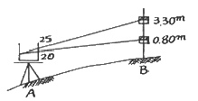
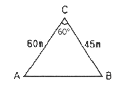
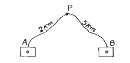
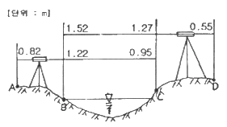

지적산업기사 (2014-05-25 기출문제)
1과목: 지적측량
1. 강재 권척이 기온의 상승으로 늘어났을 때 측정한 거리는 어떻게 보정해야 하는가?
- 측정치보다 적어지도록 보정 한다.
- 보정을 필요로 하지 않는다.
- 측정치보다 많아지도록 보정 한다.
- 가해도 좋고 감해도 좋다.
(정답률: 77%)

2. 광파기측량방법과 다각망도선법에 의한 지적 삼각보조점의 관측에 있어 도선별 평균방위각과 관측방위각의 폐색오차 한계는? (단, n은 폐색변을 포함한 변의 수를 말한다.)
- ±√n초 이내
- ±1.5√n초 이내
- ±10√n초 이내
- ±20√n초 이내
(정답률: 75%)
3. 지적도에 직경 3mm의 원을 제도하고 그 원 안에 십자선(+)을 표시하는 지적기준점은?
- 지적측량도근점
- 지적삼각보조점
- 지적삼각점
- 1등 삼각점
(정답률: 83%)
4. 교회법에 의한 지적삼각보조점 측량을 시행할 때의 설명으로 틀린 것은?
- 수평각 관측은 2대회의 방향관측법에 의한다.
- 관측은 10초독 이상의 경위의를 사용한다.
- 1측회의 폐색 허용오차는 ±40초 이내이다.
- 기지각과의 허용오차는 ±50초 이내이다.
(정답률: 77%)
5. 평판측량방법으로 세부측량을 하는 때에 측량기하적 표시사항으로 잘못된 것은?
- 측정점의 방향선 길이는 측정점을 중심으로 약 1cm 로 표시한다.
- 측정점의 표시에 있어 측량자는 직경 1.5mm 이상 3mm 이하의 원으로 표시한다.
- 방위표정에 사용한 기지점 등에는 방향선을 긋고 실측한 거리를 기재한다.
- 방위표정에 사용한 기지점이 표시에 있어 검사자는 한 변의 길이가 2~4mm의 삼각형으로 표시한다.
(정답률: 65%)
6. 지적도의 제도에 관한 다음 설명 중 틀린 것은?
- 도곽선은 폭 0.1mm로 제도한다.
- 지번과 지목은 2~3mm의 크기로 제도한다.
- 도곽선 수치는 2mm의 아라비아 숫자로 주기한다.
- 도근점은 직경 3mm의 원으로 제도한다.
(정답률: 73%)
7. 지적측량이 시행되어야 하는 토지이동 종목으로 연결된 것은?
- 등록전환, 신규등록, 분할
- 분할, 합병, 등록전환
- 분할, 합병, 신규등록, 등록전환
- 지목변경, 등록전환, 분할, 합병
(정답률: 82%)
8. 도시개발사업 등에 따른 지적확정측량을 시행할 때의 측량 방법으로 맞는 것은?
- 평판측량, 경위의측량
- 경위의측량, 전파기측량
- 전파기측량, 사진측량
- 사진측량, 위성측량
(정답률: 67%)
9. 등록전환시 임야대장상 말소면적과 토지대장상 등록면적과의 허용오차 산출식은? (단, M은 축척분모, F는 원면적)
- A=0.0262M∙√F
- A=0.026M∙F
- A=0.0262M∙F
- A=0.026M∙√F
(정답률: 93%)
10. 평판측량의 앨리데이드로 비탈진 거리를 관측하는 경우 전후 시준판 안쪽에 새겨진 한 눈금의 간격은 전후 시준판 간격의 어느 정도인가?
- 1/100
- 1/50
- 1/200
- 1/150
(정답률: 81%)
11. 배각법에 의해 도근측량을 실시하여 종선차의 합이 –140.10m, 종선차의 기지값이 –140.30m, 횡선차의 합이 320.20m, 횡선차의 기지값이 320.25m일 때 연결오차는?
- 0.21m
- 0.30m
- 0.25m
- 0.31m
(정답률: 56%)
12. 지적삼각보조측량에서 평면거리계산부를 작성할 경우 관측된 거리는?
- 수평거리
- 경사거리
- 기준면 상의 거리
- 연직거리
(정답률: 40%)
13. 90 〫30′ 20″를 호도법 (radian)의 값으로 환산하면?
- 0.6721
- 1.6721
- 1.5802
- 1.5796
(정답률: 42%)
14. 지상경계점을 설정하는 기준에 관한 설명으로 잘못된 것은?
- 고저차가 심한 곳은 그 토지의 하단부
- 절토된 도로에 있어서는 그 경사면의 상단부
- 공유수면매립지의 제방 등륵 토지에 편입하여 등록하는 경우에는 바깥쪽 어깨부분
- 해면에 접한 토지는 평균 해수면
(정답률: 80%)
15. 평판측량법으로 세부측량을 시행하는 경우의 기준으로 틀린 것은?
- 지적도 시행지역의 거리 측정단위는 10cm로 한다.
- 임야도 시행지역의 거리측정단위는 50cm로 한다.
- 세부측량의 기준이 되는 기지점이 부족할 때는 보조점을 설치할 수 있다.
- 지상경계선 도상경계선의 부합여부를 현형법 등으로 결정한다.
(정답률: 64%)
16. 평판측량에서 앨리데이드(Alidade)를 통하여 그림과 같이 관측했을 때 AB간의 수평거리 D와 고저차 H의 값이 옳은 것은? (여기서, 기계고 I=0.8m)(오류 신고가 접수된 문제입니다. 반드시 정답과 해설을 확인하시기 바랍니다.)

- D=20.0m, H=10.5m
- D=50.0m, H=10.0m
- D=50.0m, H=12.0m
- D=12.5m, H=50.0m
(정답률: 45%)
17. 망원경의 배율(倍率)에 관한 설명으로 맞는 것은?
- 대물경의 초점거리를 접안경의 초점거리로 나누는 값
- 망원경의 길이를 접안경의 직경으로 나누는 값
- 망원경의 길이를 대물경의 직경으로 나누는 값
- 접안경의 초점거리를 대물경의 초점거리로 나누는 값
(정답률: 54%)
18. 다각망도선법에 의하여 지적도근점 측량을 실시하는 방법으로 옳은 것은?
- 개방도선식으로 망을 구성한다.
- 왕복도선식으로 망을 구성한다.
- 폐합도선방식으로 망을 구성한다.
- 결합다각방식으로 망을 구성한다.
(정답률: 75%)
19. 평판측량방법에 따른 지적세부측량을 교회법으로 실시한 결과, 시오삼각형이 발생한 경우 내접원의 지름이 최대 얼마 이하인 때에 그 중심을 점의 위치로 하는가?
- 1mm
- 2mm
- 3mm
- 4mm
(정답률: 59%)
20. 다음 그림과 같은 도형의 넓이는?

- 1015m2
- 1100m2
- 1169m2
- 1272m2
(정답률: 81%)
2과목: 응용측량
21. 터널측량에서 지상측량의 좌표와 지하측량의 좌표를 점검하는 측량으로 맞는 것은?
- 지하중심선설치측량
- 터널 내∙외 연결측량
- 지표중심선측량
- 단면측량
(정답률: 87%)
22. 원곡선에 있어서 교각(I)이 60 〫, 반지름(R)이 200m, 곡선의 시점(B.C)=NO.5+5m 일 때 도로의 기점에서부터 곡선의 종점(E.C)까지의 추가거리는? (단, 중심말뚝의 간격은 20m 이다.)
- 214.4m
- 309.4m
- 209.4m
- 314.4m
(정답률: 45%)
23. 사진측량의 특수 3점 중 렌즈의 중심으로부터 내린 수선이 사진 화면과 교차하는 점은?
- 주점
- 연직점
- 등각점
- 기준점
(정답률: 66%)
24. 수준측량의 왕복거리 2km에 대하여 허용 오차가 ±3mm라면 왕복거리 4km에 대한 허용 오차는?
- ±4.24mm
- ±5.24mm
- ±7.24mm
- ±6.24mm
(정답률: 76%)
25. 50m 높이의 굴뚝을 촬영고도 2000m의 높이에서 촬영한 항공사진이 있고 이 사진의 주점기선장이 10cm이었다면 이 굴뚝의 시차차는 약 얼마인가?
- 1.5mm
- 2.5mm
- 3.5mm
- 4.5mm
(정답률: 75%)
26. 항공사진측량의 장점으로 틀린 것은?
- 일부 외업 외에 분업화로 작업능률성이 높다.
- 동일 모델 내에서 정확도는 균일하다.
- 대축척일수록 경제적이다.
- 축척변경이 용이하다.
(정답률: 71%)
27. GPS 측량의 특성에 대한 설명으로 틀린 것은?
- 측점간 시통이 요구된다.
- 야간관측이 가능하다.
- 날씨에 영향을 거의 받지 않는다.
- 전리층 영향에 대한 보정이 필요하다.
(정답률: 78%)
28. 그림에서 A, B 두개의 수준점으로부터 수준측량을 하여 구한 P점의 최확 표고는? (단, A→P : 31.363M, B→P : 31.375M)(오류 신고가 접수된 문제입니다. 반드시 정답과 해설을 확인하시기 바랍니다.)

- 31.364
- 31.366
- 31.369
- 31.372
(정답률: 60%)
29. 등고선의 성질에 대한 설명으로 틀린 것은?
- 등고선은 등경사지에서는 등간격이다.
- 높이가 다른 등고선은 절대로 서로 만나지 않는다.
- 동일 등고선 상에있는 모든 점은 같은 높이이다.
- 등고선간의 최단거리의 방향은 그 지표면의 최대경사의 방향을 가르킨다.
(정답률: 90%)
30. 그림과 같이 교호 수준측량을 시행한 경우 A점의 표고가 50m라면 D점의 표고는?

- 50.06
- 50.37
- 50.53
- 50.89
(정답률: 46%)
31. 노선측량에서 일반국도를 개설하려고 한다. 측량의 순서로 옳은 것은?
- 계획조사측량 – 노선선정 – 실시설계측량 – 세부측량 - 용지측량
- 노선선정 - 계획조사측량 - 실시설계측량 - 세부측량 - 용지측량
- 노선선정 – 계획조사측량 – 세부측량 – 실시설계측량 - 용지측량
- 계획조사측량 –노선선정 – 세부측량 - 실시설계측량 - 용지측량
(정답률: 67%)
32. 등고선에 직각이며 물이 흐르는 방향을 의미하는 지성선은?
- 분수선
- 합수선
- 경사변환선
- 최대경사선
(정답률: 62%)
33. GPS 측량에서 발생하는 오차가 아닌 것은?
- 위성시계오차
- 위성궤도 오차
- 대기권 굴절오차
- 시차(視差)
(정답률: 81%)
34. 항공사진판독에 대한 설명으로 틀린 것은?
- 사진판독은 단신간에 넓은 지역을 판독할 수 있다.
- 색조, 모양, 입체감 등이 나타나지 않는 지역은 판독에 어려움이 있다.
- 수목의 종류를 판독하는 주요 요소는 음영이다.
- 근적외선 영상은 식물과 물을 판독하는데 유용하다.
(정답률: 78%)
35. 우리나라의 1 : 25,000 지형도에서 계곡선의 간격은?
- 10m
- 20m
- 50m
- 100m
(정답률: 81%)
36. 터널측량에 관한 설명 중 틀린 것은?
- 터널측량은 터널 외 측량, 터널 내측량, 터널 내·외연결측량으로 구분할 수있다.
- 터널 내 측량에서는 기계의 십자선 및 표척등에 조명이 필요하다.
- 터널의 길이방향측량은 삼각 또는 트래버스측량으로 한다.
- 터널굴착이 끝난 구간에는 기준점을 주로 바닥에 설치한다.
(정답률: 85%)
37. 항공사진측량용 사진기에 대한 설명으로 틀린 것은?
- 초광각 사진기의 화각은 60도, 광각 사진기의 화각은 90도, 보통각 사진기의 화각은 120도이다.
- 렌즈왜곡이 적으며 왜곡이 있어도 보정이 가능하다.
- 일반사진기와 비교하여 화각이 크다.
- 해상력과 선명도가 좋다.
(정답률: 73%)
38. 클 로소이드 곡선에 대한 설명으로 틀린 것은?
- 곡률이 곡선의 길이에 반비례한다.
- 형식에는 기본형, 복합형, S형 등이 있다.
- 설치법에는 주접선에서 직교좌표에 의해 설치하는 방법이있다.
- 단위 클로소이드란 클로소이드의 매개변수 A=1, 즉 R.L=1의 관계에 있는 경우를 말한다.
(정답률: 68%)
39. 완화곡선의 성질에 대한 설명중 틀린 것은?
- 완화곡선의 반지름은 시점에서 무한대이다.
- 완화곡선은 시점에서는 직선에 접하고 종점에서는 원호에 접한다.
- 완화곡선에 연한 곡선반지름의 감소율은 캔트의 증가율과 같다.
- 완화곡선 시점의 캔트는 원곡선의 캔트와 같다.
(정답률: 65%)
40. 촬영고도 2000m, 초점거리152.7mm 사진기로 촬영한 항공사진에서 30m교량의 길이는?
- 3.0mm
- 2.3mm
- 2.0mm
- 1.5mm
(정답률: 66%)
3과목: 토지정보체계론
41. 오토캐드용 자료 파일을 다른 그래픽 체계에서 사용될수 있도록 만든 ASCII 형태의 그래픽 자료파일 형식은?
- DXF
- IGES
- NSDI
- TIGER
(정답률: 84%)
42. 현행 토지정보시스템의 속성자료와 관련이 없는 것은?
- 토지대장
- 임야대장
- 국세과세대장
- 공유지연명부
(정답률: 77%)
43. 래스터자료와 비교하여 벡터자료가 갖는 특성으로 틀린 것은?
- 복잡한 자료를 최소한의 공간에 저장시킬 수 있다.
- 공간 연산이 상대적으로 어렵고 시간이 많이 소요된다.
- 위상관계를 나타낼 수있다.
- 래스터 자료에 비해서 시뮬레이션 작업을 손쉽게 생성할 수있다.
(정답률: 63%)
44. 도형정보의 자료구조에 관한 설명으로 옳지 않은 것은?
- 벡터구조는 그래픽의 정확도가 높다.
- 벡터구조는 자료구조가 복잡하다.
- 격자구조는 그래픽 자료의 양이 적다.
- 격자구조는 자료구조가 단순하다.
(정답률: 79%)
45. 지형도와 지적도를 중첩할 때 도념과 도면이 불연속 되는 부분을 수정하는데 이용될 수 있는 참고자료로 가장 좋은 것은?
- DEM
- LIDAR 영상
- 저해상도 위성영상
- 정사사진영상
(정답률: 63%)
46. 래스터데이터에 해당하지 않는 것은?
- 위치좌표데이터
- 위성영상데이터
- 항공사진데이터
- 이미지데이터
(정답률: 72%)
47. 점, 선, 면, 등의 객체들 간의 공간관계가 설정되지 못한 채 일련의 좌표에 의한 그래픽 형태로 저장되는 구조로 공간분석에는 비효율적이지만 자료구조가 매우 간단하여 수치지도를 제작하고 갱신하는 경우에는 효율적인 자료구조는?
- 래스터(raster)구조
- 스파게티(spaghetti)구조
- 위상(topology)구조
- 체인코드(chain codes)구조
(정답률: 70%)
48. 도시개발사업에 따른 지구계 분할시 지구계 구분코드 입력사항으로 알맞은 것은?
- 지구내 0, 지구외2
- 지구내 0, 지구외1
- 지구내 1, 지구외0
- 지구내 2, 지구외0
(정답률: 77%)
49. 래스터자료에 해당 되는 것은?
- SHP파일
- DWG 파일
- TIF 파일
- DGN 파일
(정답률: 78%)
50. 토지정보시스템의 정보 획득 과정 중에서 복잡한 현실세계를 이해할수 있도록 해주는 작업으로 기하학적 객체를 생생하게 묘사하는 과정은?
- 자료의 입력
- 자료의 출력
- 자료의 모델링
- 자료의 변환
(정답률: 84%)
51. 토지정보시스템에 사용되는 지도투영법에 대한 설명으로 옳은 것은?
- 어떤 지도투영법으로 만들어진 자료를 다른 투영법의 자료로 변환하지는 못한다.
- 우리나라 지적도의 투영에 사용된 지도투영법은 램버트 등각두영법이다.
- 토지정보시스템에서 지도투영법은 속성데이터를 표현하는데 사용된다.
- 지구타원체상의 형상을 평면직각좌표로 표현할 때에는 비틀림이 발생한다.
(정답률: 69%)
52. 토지정보체계의 도형자료를 컴퓨터에 입력하는 방식과 관련이 없는 것은?
- 디지타이징
- 스캐닝
- 항공사진 디지타이징
- 좌표변환
(정답률: 77%)
53. 지적정보로 볼 수 없는 것은?
- 지번
- 소유자
- 면적
- 도로중심선
(정답률: 72%)
54. 토지정보시스템의 구성요소에 해당하지 않는 것은?
- 하드웨어
- ITS정보망
- 소프트웨어
- 인적자원
(정답률: 84%)
55. 지적재조사 사업이 필요한 이유로 가장 거리가 먼 것은?
- NGIS 구축
- 지적도면의 노후화
- 지적불부합지의 과다
- 통일원점의 본원적 문제
(정답률: 59%)
56. 토지정보체계의 자료처리 흐름으로 일반적인 자료처리과정에 포함되지 않는 것은?
- 모형화
- 부호화
- 통계해석
- 중첩.분해
(정답률: 41%)
57. 고유번호 4567891232-20002-0010인 토지에 대한설명으로 틀린 것은?
- 45는 시, 도를 나타낸다.
- 912는 읍, 면, 동을 나타낸다.
- 지번은 2-10이다.
- 32는 리를 나타낸다.
(정답률: 78%)
58. 메타데이터에 포함되는 정보가 아닌 것은?
- 도형 및 속성 데이터의 구성
- 데이터의 제어 및 공유사항
- 데이터의 제공 포맷
- 데이터의 이력사항
(정답률: 30%)
59. 한국토지정보체계(KLIS)의 토지민원발급시스템에 대한 설명이 옳지 않은 것은?
- 지역적 한계를 극복하고 전국을 네트워크로 연결하여 열람 및 발급이 가능하다.
- 시군구 또는 읍면동 사무소에서 즉시 지적공부의 열람 및 발급이 가능하다.
- 토지민원발급시스템은 대한지적공사의 지사에서도 열람 및 발급이 가능하다.
- 개별공시지가 확인서 및 지적기준점 확인원의 발급이 가능하다.
(정답률: 62%)
60. 지적정보전산화에 있어 속성정보를 구축하는 방법 중 가장 거리가 먼 것은?
- 민원인이 직접 조사하는 경우
- 관련기관의 통보에 의한 경우
- 민원신청에 의한 경우
- 담당공무원이 직권등록한 경우
(정답률: 78%)
4과목: 지적학
61. 다음 중 현재의 토지대장과 같은 것은?
- 문기(文記)
- 양안(量案)
- 사표(四標)
- 입안(立案)
(정답률: 75%)
62. 다음 중 토지조사사업의 주된 내용으로 거리가 먼 것은?
- 토지의 소유권 보호
- 토지의 행정구역 조사
- 토지의 외모 조사
- 토지의 가격 조사
(정답률: 56%)
63. 기본도로서 지적도가 갖추어야 할 요건으로 타당하지 않은 것은?
- 기본적으로 필요한 정보가 수록되어야 한다.
- 일정한 축척의 도면 위에 등록해야 한다.
- 특정자료를 추가하여 수록할 수 있어야 한다.
- 기본정보는 변동없이 항상 일정해야 한다.
(정답률: 70%)
64. 다음 중 도곽선의 역할로 가장 거리가 먼 것은?
- 기초점 전개의 기준
- 지적 원점 결정의 기준
- 도면 신축량 측정의 기준
- 인접 도면과 접합의 기준
(정답률: 58%)
65. 경계점좌표등록부에 등록되는 좌표는?
- 구면직각 좌표
- 경위도 좌표
- 평면직각 좌표
- UTM 좌표
(정답률: 69%)
66. 우리나라 지적제도에서 채택하고 있는 지목유형은?
- 토성(土性)지목
- 용도(用途)지목
- 지형(地形)지목
- 신청(申請)지목
(정답률: 84%)
67. 다음 중 지적제도의 발달과정을 옳게 나열한 것은?
- 법지적 → 세지적 → 다목적지적
- 세지적 → 법지적 → 다목적지적
- 세지적 → 다목적지적 → 법지적
- 다목적지적 → 법지적 → 세지적
(정답률: 82%)
68. 다음 중 지적의 본질이 아닌 것은?
- 토지에 대한 모든 물권 변동사항의 등록을 목적으로한다.
- 일필지에 대한 정보를 체계적으로 등록한다.
- 토지 표시사항의 이동사항을 결정한다.
- 실제와 부합되는 자료대로 함을 원칙으로 한다.
(정답률: 48%)
69. 특별한 기준을 두지 않고 당사자가 신청하는 시간적 순서에 따라 순차로 기록해 가는 토지대장의 편성 방법은?
- 물적 편성주의
- 인적 편성주의
- 연대적 편성주의
- 물적·인적편성주의
(정답률: 71%)
70. 토지조사사업 당시 일필지의 강계(疆界)를 결정하기 위한 직접적인 목적과 조건을 설명한 것으로 옳지 않은 것은?
- 소유권 분계(分界)를 확정하기 위한 목적이 있었다.
- 분쟁지를 해결하기 위한 목적이 있었다.
- 토지소유자가 동일해야 한다.
- 지목이 동일하고 연속된 토지이어야 한다.
(정답률: 47%)
71. 다음 중 다목적지적의 구성요소로 보기 어려운 것은?
- 필지식별번호
- 기본도
- 지적도
- 지형도
(정답률: 57%)
72. 정전제(丁田制)를 주장한 학자가 아닌 것은?
- 한백경(韓白鏡)
- 서명응(徐命膺)
- 이기(李沂)
- 세키야
(정답률: 69%)
73. 다음 중 축척이 다른 2개의 도면에 동일한 필지의 경계가 각각 등록되어 있을 때 토지의 경계를 결정하는 원칙으로 옳은 것은?
- 토지소유자에게 유리한 쪽에 따른다.
- 축척이 작은 것에 따른다.
- 축척이 큰 것에 따른다.
- 축척의 평균치에 따른다.
(정답률: 86%)
74. 토지등록제도에 있어서 권리의 객체로서 모든 토지를 반드시 특정적이면서도 단순하고 명확한 방법에 의하여 인식될수 있도록 개별화함을 의미하는 토지 등록 원칙은?
- 공신의 원칙
- 특정화의 원칙
- 신청의 원칙
- 등록의 원칙
(정답률: 82%)
75. 다음 중 지적측량에 따른 민사책임에 해당되는 것은?(오류 신고가 접수된 문제입니다. 반드시 정답과 해설을 확인하시기 바랍니다.)
- 지적측량과정에서 과실로 토지내 수목제거
- 중과실로 지적측량에 잘못을 범한 때
- 지적측량부의 타목적에 이용
- 경계점의 손괴, 이동 및 제거
(정답률: 72%)
76. 지적의 3요소와 가장 거리가 먼 것은?
- 토지
- 등록
- 등기
- 공부
(정답률: 80%)
77. 3차원 지적에 해당되지 않는 것은?
- 평면지적
- 입체지적
- 지표공간
- 지중공간
(정답률: 82%)
78. 다음 중 도해지적에 대한 설명으로 거리가 먼 것은?
- 축척의 크기에 따라 허용오차가 다르다.
- 도면의 신축방지와 보관관리가 어렵다.
- 소요되는 비용과 시간이 비교적 저렴하다.
- 지적측량결과를 지상에 복원할 때 측량 당시의 정확도로 재현할 수 있다.
(정답률: 59%)
79. 다음 중 지적의 기본이념으로만 열거된 것은?
- 국정주의, 형식주의, 공개주의
- 국정주의, 형식적심사주의, 직권등록주의
- 직권등록주의, 형식적심사주의, 공개주의
- 형식주의, 민정주의, 직권등록주의
(정답률: 85%)
80. 징발된 토지의 소유권은 누구에게 있는가?
- 국가
- 국방부
- 지방자치단체
- 토지소유자
(정답률: 71%)
5과목: 지적관계
81. 지적도와 임야도의 등록사항으로 옳지 않은 것은?
- 도곽선수치
- 토지의 소재
- 지번과 지목
- 경계점좌표
(정답률: 56%)
82. 다음 중 토지대장에 등록한 면적의 표기로서 틀린 것은?
- 234.5m2
- 234.0m2
- 234m2
- 234.⑤m2
(정답률: 74%)
83. 축척변경에 따른 청산금 납부고지 또는 수령토지 시기는?
- 축척변경확정공고한 날부터 30일이내
- 축척변경승인 때부터 30일 이내
- 청산금의 결정을 공고한 날부터 20일이내
- 청산금의 이의신청이 있는 날부터 20일 이내
(정답률: 57%)
84. 지적공부가 멸실된 경우 현행 측량·수로조사 및 지적에 관한 법률상 복구에 대한 설명으로 적합하지 않은 것은?
- 소유자에 관한 사항은 지적소관청에서 조사하여 복구한다.
- 지적공부의 복구자료로 측량결과도를 활용할 수 있다.
- 토지이동정리결의서는 복구를 위한 자료로 활용된다.
- 복구하고자 하는 토지표시는 시·군·구 게시판 및 인터넷 홈페이지에 15일 이상 개시해야 한다.
(정답률: 53%)
85. 토지에 대해 합병신청을 할 수 없는 경우에 해당하는 것은?
- 합병하고자 하는 각 필지의 지반이 연속되어 있는 경우
- 합병하고자 하는 각 필지의 지적도 및 임야도의 축척이 서로 다른 경우
- 합병하고자 하는 토지의 소유자가 동일한 경우
- 합병하고자 하는 각 필지의 지목이 동일한 경우
(정답률: 79%)
86. 유적, 고적, 기념물 등의 보존용 토지를 사적지로 보지 않는 경우로 틀린 것은?
- 잡종지 구역 안에 있는 경우
- 학교용지 구역 안에 있는 경우
- 종교용지 구역 안에 있는 경우
- 공원 구역 안에 있는 경우
(정답률: 64%)
87. 사업시행자가 토지이동에 관하여 대위신청을 할 수 있는 토지의 지목이 아닌 것은?
- 수도용지, 학교용지
- 철도용지, 하천
- 과수원, 유원지
- 유지, 제방
(정답률: 53%)
88. 공유수면 매립으로 신규등록을 할 경우 지번부여방법으로 틀린 것은?
- 인접토지의 본번에 부번을 붙여서 지번을 부여한다.
- 종전 지번의 수에서 결번을 찾아서 새로이 부여한다.
- 신규등록 토지가 여러 필지로 되어 있는 경우는 최종 본번 다음 번호로 부여한다.
- 최종 지번의 토지에 인접되어 있는 경우는 최종 본번 다음 번호로 부여한다.
(정답률: 67%)
89. 대장의 고유번호 중 폐쇄된 임야대장은 몇 번으로 표기되는가?
- 6
- 7
- 8
- 9
(정답률: 58%)
90. 지적공부에 등록하는 경계(境界)의 결정권자는 누구인가?
- 국토교통부장관
- 안전행정부장관
- 지적소관청
- 시·도지사
(정답률: 77%)
91. 토지의 지목을 지적도에 정리할 때 지목과 부호의 연결이 바른 것은?
- 공장용지 → 공
- 하천 → 하
- 사적지 → 적
- 과수원 → 과
(정답률: 79%)
92. 도시계획구역의 토지를 그 지방자치단체의 명의로 등록할 경우 기획재정부장관과 협의한 문서의 사본이 필요한 토지이동 신청으로 옳은 것은?
- 신규등록신청
- 축척변경신청
- 토지분할신청
- 등록전환신청
(정답률: 42%)
93. 지적공부에 해당하지 않는 것은?
- 측량 성과도
- 토지대장
- 임야도
- 임야대장
(정답률: 74%)
94. 다음 중 지적측량수행자의 성실의무에 관한 설명으로 옳지 않은 것은?
- 정당한 사유없이 지적측량 신청을 거부하여서는 아니된다.
- 배우자 이외에 직계 존속.비속이 소유한 토지에 대한 지적측량을 할 수 있다
- 지적측량 수수료 외에는 어떠한 명목으로도 그 업무와 관련한 대가를 받으면 아니 된다
- 지적측량수행자는 신의와 성실로 공정하게 지적측량을 하여야 한다
(정답률: 90%)
95. 다음 중 토지를 지적공부에 1필지로 등록하는 기준으로 옳은 것은?
- 지번부여지역의 토지로서 용도와 관계없이 소유자가 동일하면 1필지로 등록할수 있다
- 지번부여지역의 토지로서 소유자와 용도가 같고 지반이 연속된 토지는 1필지로 등록할 수 있다.
- 행정구역을 달리할지라도 지목과 소유자가 동일하면 1필지로 등록한다.
- 종된 용도의 토지 면적이 100제곱미터를 초과하면 1필지로 등록한다.
(정답률: 86%)
96. 다음 중 지목을 잡종지로 하여야 하는 것으로만 나열된 것은?
- 공동우물, 수영장
- 비행장, 야외시장
- 정수시설, 토취장
- 화장장, 골프장
(정답률: 78%)
97. 지적공부의 등록사항 중 토지소유자에 관한 사항을 정정할 경우 다음 중 어느 것을 근거로 정정하여야 하는가?
- 등기사항증명서
- 매매 계약서
- 토지 대장
- 등기 신청서
(정답률: 66%)
98. 다음 중 축척변경의 확정공고시에 포함하여야 할 사항이 아닌 것은?
- 토지의 소재
- 지적도의 축척
- 청산금조서
- 경계점좌표
(정답률: 54%)
99. 다음 중에서 경계나 면적을 새로 결정하지 않아도 되는 것은?
- 토지를 신규로 등록하는 때
- 등록전환을 하는 때
- 경계를 정정하는 때
- 지목변경을 하는 때
(정답률: 68%)
100. 축척변경의 목적으로 적합한 것은?
- 등록전환
- 정밀도제고
- 행정구역변경
- 소유권보호
(정답률: 68%)